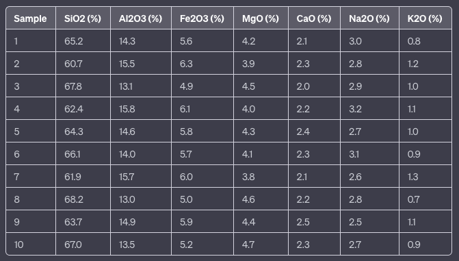

This is our first Recipe.
In this lesson, we'll explore the fundamentals of data visualization in R. Data visualization is a powerful tool for geologists to communicate their findings and gain insights from geological data.
Data visualization is the process of representing data graphically to aid in understanding and interpretation. In R, you can create a wide range of visualizations using various packages and libraries. We'll start with the basics using base R graphics.
Imagine you have collected geochemical data from 10 different igneous rock samples, and you want to organize this data into a dataset. Each sample will include the concentrations of major elements commonly found in igneous rocks, such as SiO2 (Silicon Dioxide), Al2O3 (Aluminum Oxide), Fe2O3 (Iron Oxide), MgO (Magnesium Oxide), CaO (Calcium Oxide), Na2O (Sodium Oxide), and K2O (Potassium Oxide).
Here's a tabular representation of your dataset:
This dataset represents the major element composition (as percentages) of 10 different igneous rock samples. You can create this dataset in R by using the data.frame() function, specifying the values for each column.
Here's how you can create the data frame.
# Create a data frame with geochemical analysis data for igneous rocks
geochem_data <- data.frame(
Sample = 1:10,
SiO2 = c(65.2, 60.7, 67.8, 62.4, 64.3, 66.1, 61.9, 68.2, 63.7, 67.0),
Al2O3 = c(14.3, 15.5, 13.1, 15.8, 14.6, 14.0, 15.7, 13.0, 14.9, 13.5),
Fe2O3 = c(5.6, 6.3, 4.9, 6.1, 5.8, 5.7, 6.0, 5.0, 5.9, 5.2),
MgO = c(4.2, 3.9, 4.5, 4.0, 4.3, 4.1, 3.8, 4.6, 4.4, 4.7),
CaO = c(2.1, 2.3, 2.0, 2.2, 2.4, 2.3, 2.1, 2.2, 2.5, 2.3),
Na2O = c(3.0, 2.8, 2.9, 3.2, 2.7, 3.1, 2.6, 2.8, 2.5, 2.7),
K2O = c(0.8, 1.2, 1.0, 1.1, 1.0, 0.9, 1.3, 0.7, 1.1, 0.9)
)
# Display the geochemical analysis dataset
print(geochem_data)This code creates a data frame called geochem_data containing the geochemical analysis data for 10 samples of igneous rocks, including major element concentrations (SiO2, Al2O3, Fe2O3, MgO, CaO, Na2O, and K2O) for each sample.
TSo let's explore data visualization techniques using the Base R graphics. We'll use the geochem_data dataset to create various types of plots and customize them to effectively visualize the geochemical data of the igneous rock samples.
Scatter Plots: are effective for visualizing relationships between two variables. Let's create a scatter plot to explore the relationship between SiO2 and Al2O3 concentrations:
plot(geochem_data$SiO2, geochem_data$Al2O3,
xlab = "SiO2 (%)", ylab = "Al2O3 (%)",
main = "SiO2 vs. Al2O3 Scatter Plot")Bar Charts: To visualize the average concentration of SiO2 in the samples, we can create a bar chart:
barplot(mean(geochem_data$SiO2),
main = "Average SiO2 Concentration",
ylab = "SiO2 (%)")Histograms: To explore the distribution of K2O concentrations, we can create a histogram:
hist(geochem_data$K2O,
main = "Histogram of K2O Concentration",
xlab = "K2O (%)", ylab = "Frequency")Customization is essential to make your plots informative and visually appealing. You can customize various aspects of your plots, including titles, labels, colors, and more. For example, you can change the color of the points in a scatter plot or adjust the bin width in a histogram.
By using base R graphics, you have the flexibility to create and customize a wide range of visualizations to explore and present your geochemical data effectively. In the chapters that follow, we'll explore more advanced data visualization techniques and packages in R for even more powerful visualizations.
One can say that customization can help convey specific information and enhance the visual appeal of your plots:
Customizing Scatter Plots: You can customize scatter plots by changing the point colors, sizes, and adding labels. For instance, let's customize our SiO2 vs. Al2O3 scatter plot;
# Create a scatter plot with customized points
plot(geochem_data$SiO2, geochem_data$Al2O3,
xlab = "SiO2 (%)", ylab = "Al2O3 (%)",
main = "SiO2 vs. Al2O3 Scatter Plot",
col = "blue", pch = 16, cex = 1.5) # Change point color, style, and sizeCustomizing Bar Charts: Bar charts can be customized by adjusting colors, adding labels, and modifying axis scales. To customize the average SiO2 concentration bar chart:
# Create a bar chart with customizations
barplot(mean(geochem_data$SiO2),
main = "Average SiO2 Concentration",
ylab = "SiO2 (%)",
col = "green", # Change bar color
names.arg = "SiO2", # Add custom label
ylim = c(0, 80)) # Modify y-axis limitsCustomizing Histograms: Histograms can be customized by changing the bin width, colors, and adding additional information. To customize the K2O concentration histogram:
# Create a histogram with customizations
hist(geochem_data$K2O,
main = "Histogram of K2O Concentration",
xlab = "K2O (%)", ylab = "Frequency",
col = "purple", # Change histogram color
breaks = 10) # Adjust bin widthThese customizations are just a starting point. Base R graphics offer extensive customization options, allowing you to tailor your plots to your specific needs and preferences. Effective data visualization is essential for geologists to convey geological insights and patterns accurately, and customizations play a significant role in achieving that goal.
In the Recipes, we'll explore advanced data visualization techniques, including interactive and specialized geological plots, using additional R packages.
Next, in Lesson 6-Data Analysis, we'll go into the basics of data analysis using examples from geological data.
This is our first Recipe.

Under construction.
You can always contact me to send a new Recipe, or to ask dor something special...